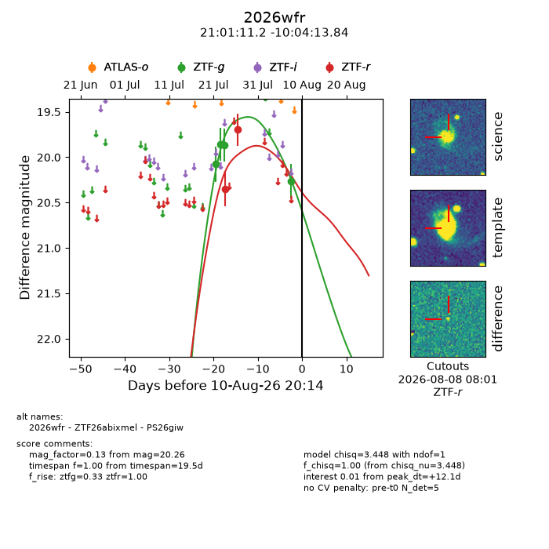
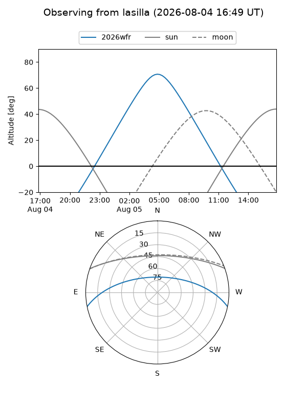
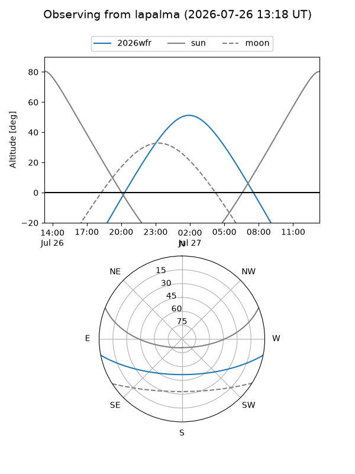
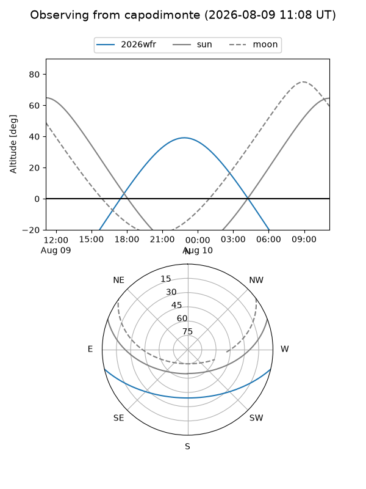
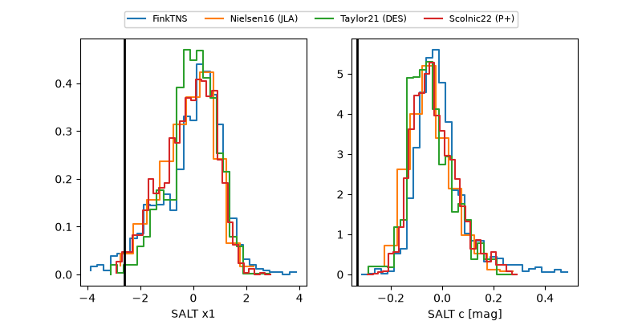

2026wfr
Target 2026wfr at 2026-08-10 20:16
Aliases and brokers:
FINK-ZTF: ztf.fink-portal.org/ZTF26abixmel
Lasair-ZTF: lasair-ztf.lsst.ac.uk/objects/ZTF26abixmel
ALeRCE-ZTF: alerce.online/object/ZTF26abixmel
YSE-PZ: ziggy.ucolick.org/yse/transient_detail/2026wfr
TNS name: wis-tns.org/object/2026wfr
Direct TNS query: direct search
alt names
ZTF26abixmel (ztf,fink_ztf)
2026wfr (tns,yse)
PS26giw (panstarrs)
Coordinates:
equatorial (ra, dec) = 315.2965,-10.07051
equatorial (HMS+DMS) = 21:01:11.15,-10:04:13.84
galactic (l, b) = (38.7850,-33.34939)
Flags:
TNS type: nan
peak dt: +12.1
Photometry:
last ztfg=20.26, ztfr=19.70
4 ztfg, 2 ztfr detections
Lightcurve

Visibility



Additional plots
